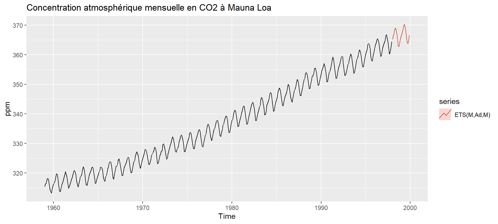
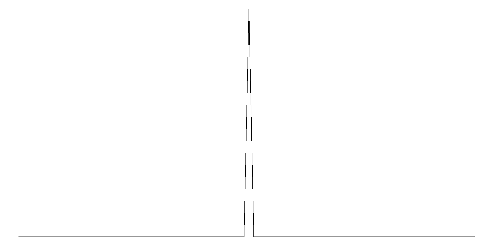
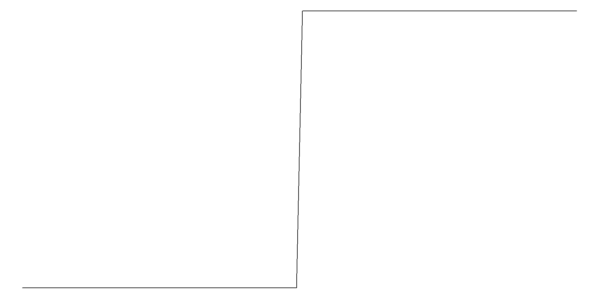
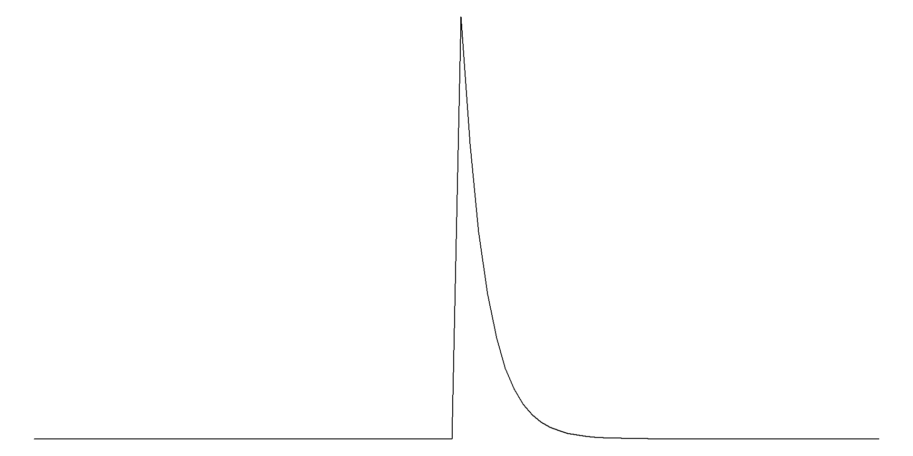
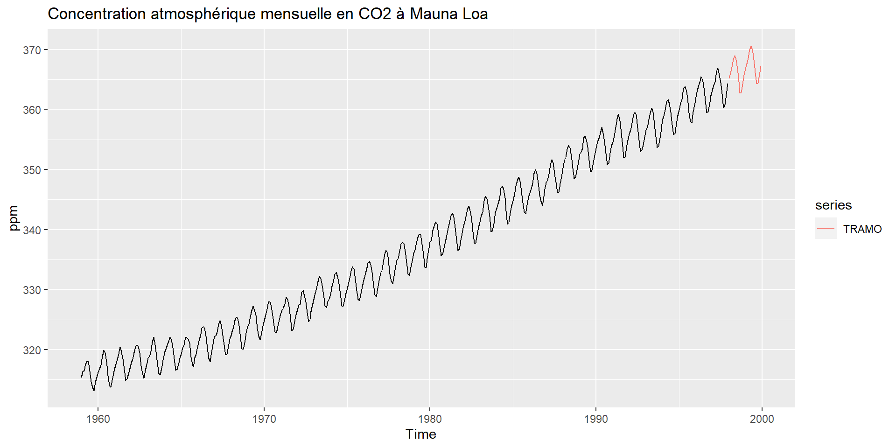

European Statistics Challenge
Retour d’expérience de nowcasting
*
**
***
*
***
* = SSP Lab, ** = DSE, *** = DEE
Introduction
- European Statistics Awards for Nowcasting and Web Intelligence
- Retour d’expérience sur 3 compétitions de nowcasting lancées en septembre 2022 : proposer des estimations “coïncidentes” (dernier jour du mois)
- Sur 1 ou plus parmi 3 indicateurs conjoncturels mensuels agrégés : indice de la production industrielle (PVI), indice de prix de production de l’industrie pour le marché intérieur (PPI), nombre de nuitées dans les établissements touristiques (Tourism)
- Sur un set de pays (5 minimums, hors France)
- 6 points consécutifs miminums, sur une période courant de septembre 2022 à avril 2023
Exigences d’Eurostat et méthode d’évaluation
- Innovation dans les méthodes et les données mobilisées (jusqu’à 5 essais / modèles considérés par point pour multiplier les approches).
- Pas de prévision “expert” / Poids important accordé à la reproductibilité
- Accuracy award
- Reproducibility award
- Pour un indicateur donné, calcul de l’erreur quadratique moyenne sur 6 mois consécutifs pour chaque pays
- Puis pondération selon un critère de volatilité / agrégation des scores sur les 5 meilleurs pays
Approche / Difficultés / Choix (1)
- Certain nombre de nos choix -à discuter- induits par les conditions du challenge
- Peu de temps pour prendre du recul (revue biblio / état de l’art / échanges) : sélection très rapide d’un set (diversifié) de modèles
- MVP coûteux : difficile de repartir d’un existant, récupération des données de base en conjoncture, aspect récurrent à intégrer rapidement
- Mode compétition : choix d’une approche globalement agnostique afin de réaliser des estimations sur l’ensemble des pays (plutôt que fine tuning sur quelques pays)
- Enjeu de mesure de la qualité des modèles sur le passé (BDD temps réel)
- Pas facile d’identifier et accéder à des données innovantes en si peu de temps (2 ans sur données CB à l’Insee) + approche open data par construction limitative (par ex PMI, prix détaillés des matières premières, … auraient pu être intéressants)
- Gros investissement sur l’axe reproductibilité
- Non stationnarité covid + envolée des prix…
- Mode “découverte” / apprentissage !
Approche / Difficultés / Choix (2)
- Que penser de ce type de compétition ?
- Approche sympa, mais …
- … Manque de temps un peu frustrant (essais dans l’eau, données) ;
- Gain marginal sur la performance globale de plus en plus faible ⇒ L’essentiel du travail sur la partie stats a été réalisé sur 4-5 mois. Ensuite, davantage sur l’amélioration du code / reproductibilité ;
- 6 mois, c’est finalement peu pour juger de la qualité d’une approche.
- Dans la suite, on vous parle de ce qu’on retient de ces 8 mois : tour d’horizon données / modèles, points / idées notables, approches qu’on n’a pas eu le temps d’essayer, investissement sur la reproductibilité + quelques résultats
- Mais il ne s’agit en aucun cas d’un travail abouti sur le nowcasting (temps et moyens limités, choix n’ont pas pu être “challengés”…)
Données
La reproductibilité imposant l’usage de données open source, nos sources sont les suivantes :
Eurostat : données macroéconomiques disponibles via l’API d’Eurostat
Données financières : taux de changes, cours du Brent et indices boursiers (
quantmod)Google Trends : données correspondant à la fréquences de recherches sur Google (
gtrendsR)Autres données :
- Prix de l’électricité
- Indicateurs macroéconomiques précoces en cours de développement (daily Truck toll mileage index, Weekly WIFO Economic Index)
Retour sur les méthodes
Modèles exponentiels
ETS et lissage exponentiel
Modèles simples, souvent utilisés en benchmark et notamment depuis les développements sur l’identification des modèles
Ex : Makridakis et al. (2022) montrent que 92,5 % des soumissions à la compétition M5 ne font pas mieux qu’une approche bottom-up avec modèles ETS
Taxonomie générale :
ETS = ExponenTial Smoothing
ETS = Erreur, Tendance et Saisonnalité
Erreur : Additive (
"A") ou multiplicative ("M")Tendance : Sans tendance (
"N"), additive ("A"), multiplicative ("M") ou amortie ("Ad"ou"Md")Saisonnalité : Sans saisonnalité (
"N"), additive ("A") ou multiplicative ("M")
"Z" pour une sélection automatique
Erreurs additives

Source : Hyndman, R.J., & Athanasopoulos, G. (2018)
Erreurs multiplicatives

Source : Hyndman, R.J., & Athanasopoulos, G. (2018)
Estimation
Sous :
Pour les objets ts : forecast::ets() avec paramètre damped = FALSE ou damped = TRUE.
Pour les objets tsibble (utilisés ici) : fable::ETS() avec fonctions error(), trend() et season().
Sélection de modèle automatique en minimisant l’AIC.
Pour les données du tourisme, les modèles sont identifiés en ne prenant pas en compte le COVID.
Exemple
TRAMO
Modèle
Modèle classique pour décrire des séries temporelles stationnaires ou non \[ \Delta(B)\Phi(B)(y_t-X_t\beta)=\Theta(B)\varepsilon_t \]
Sous : RJDemetra::regarima()
TRAMO = Time Series Regression with ARIMA Noise, Missing Observations, and Outliers :
éventuelle transformation en logarithme
identification automatique de différents types d’outliers et correction des jours ouvrables
possibilité d’ajouter des régresseurs externes
identification automatique d’un modèle ARIMA
Outliers détectés
Choc ponctuel
Additive outlier (AO)

Changement de niveau
Level Shift (LS)

Changement de niveau transitoire
Transitory Change (TC)

Exemple
Modèles à facteurs dynamiques (DFM)
DFM
On a un ensemble de variables \(\mathbf x_t=(x_{1,t},\dots,x_{n,t})\) et on suppose que les “co-mouvements” des \(x_{it}\) proviennent d’un nombre \(r\ll n\) de variables inobservés (facteurs) : \[ \begin{cases} \mathbf x_t &= \mathbf C_0 \mathbf f_t+\mathbf e_t \\ \mathbf f_t &= \sum_{j=1}^p\mathbf A_j\mathbf f_{t-j}+\mathbf u_t \end{cases} \]
Modélisation espace-état et estimation avec le filtre de Kalman qui permet notamment de prendre en compte l’imputation de données manquantes (prévision) et des données à plusieurs fréquences.
Seule méthode où la prévision de la variable à expliquer n’est pas centrale !
Exemple
Sous : dfms::DFM()
LSTM
Réseaux de neurones particulièrement adaptés à la prévision de séries temporelles :
réseaux de neuronnes récurrent => permettent des dépendances de long terme
capturent également les relations de court terme

Structure d’un LSTM
Principe : un “cell state” contient l’information de long terme et est mis à jour à chaque itération
Principe : un “cell state” contient l’information de long terme et est mis à jour à chaque itération
à chaque pas temporel :
- input : nouvelles observations \(t\), mémoire du modèle en \(t-1\)
- output : prévision \(y_t\) et mise à jour de la *mémoire

LSTM : utilisation en R
Sous
python, la librairienowcastLSTMnowcastLSTM::LSTM()pour entraîner le modèleon entraine un modèle par pays
Données et avantages
- Ce modèle permet l’utilisation de sources multiples de données :
- Nouveaux indicateurs économiques d’Eurostat
- Données financières de Yahoo Finance (taux de change, cours du pétrole, etc.)
- Lags des séries temporelles sur plusieurs mois
- Google Trends sur les recherches spécifiques au secteur
- La dimension temporelle est particulièrement adaptéé aux séries temporelles
- Pas de problèmes avec les ragged-edge
- On peut prendre en compte des dépendances de long terme
- Au prix d’un coût computationnel élevé et d’un modèle peu transparent
XGBoost
Qu’est-ce qu’un arbre de décision ?
- On décide de la valeur prédite par une séquence de subdivisions selon la valeur d’un regresseur qui se font :
- selon le régresseur
- à la valeur qui maximisent un critère d’homogénéité dans les classes obtenues

XGBoost : Schéma général
Souvent arbre seul n’est pas efficace, on utilise donc des méthodes ensemblistes.

XGBoost : maximisation des performances
- On va jouer sur plusieurs paramètres :
- La profondeur des arbres
- Le nombre d’arbres
- Le troncage des lignes ou colonnes données à chaque arbre
- On va apporter plus de variables d’entrée :
- Nouveaux indicateurs économiques d’Eurostat
- Données financières de Yahoo Finance (taux de change, cours du pétrole, etc.)
- Lags des séries temporelles sur plusieurs mois
- Google Trends sur les recherches spécifiques au secteur
XGBoost : utilisation en R
Sous , la librairie
xgboostxgboost::xgb.train()pour entraîner le modèlexgboost::xgb.importance()pour observer quelles sont les variables les plus influentes sur les résultats, en l’occurrence :- Les lags des 3 derniers mois (ou 3 dernières années) car séries très autocorrélées / saisonnières
- Les Google Trends pour avoir les évolutions les plus récentes de la série dans le mois considéré
XGBoost : Réflexions
- Un unique modèle européen ou bien un différencié par pays ?
- Seconde option retenue car prédictions du modèle unique pas assez différenciées par pays
- La valeur du mois n-1 sortie que pour une moitié des pays : on veut pouvoir l’utiliser quand disponible sans dégrader les pays en retard
- Combien de lags utiliser ?
- Avec le XGBoost, chaque ligne interprétée indépendamment sans utilisation des séries temporelles
- Si on veut qu’il apprenne des valeurs des x derniers mois, on ajoute les lags comme colonnes
- Analyse rapide des autocorrélations pour voir jusqu’où aller
- En pratique, les 6 derniers mois suffisent (et 6 dernières années pour les données touristiques)
Améliorations
Pistes
Une analyse par pays est indispensable pour adapter la spécification à chaque modèle !
ADAM pour implémenter des ETS-X.
Voirsmooth::adam()et https://openforecast.org/adam/Sélection des variables externes dans TRAMO
Combinaison des modèles et des prévisions
Une approche désagregée plus souhaitable pour certains indicateurs ( + permet de conserver une certaine interprétabilité)
Comparaison des modèles
flowchart TD
C{Modèles énonométriques}
I{DFM}
J{Machine Learning}
C --> E[ETS]
C --> F[TRAMO]
I --> M[Modèles à facteurs]
J --> K[LSTM]
J --> L[XGBOOST]
E --> O[Avantages : Simple, interprétable <br/> Limites : Peu de variables externes ]
F --> O[Avantages : Simple, interprétable <br/> Limites : Peu de variables externes ]
M --> R[Avantages : Imputation des valeurs manquantes, fréquences mixes possibles <br/> Limites : la prévision n'est pas centrale]
K --> P[Avantages : Adapté aux séries temporelles, <br/> dépendances de long terme <br/> Limites : Long à tourner, **boîte noire** ]
L --> Q[Avantages : Facile d'interprétation<br/> bonnes performances <br/> Limites : Inadapté à l'extrapolation ]
Reproductibilité
Un enjeu de reproductibilité
Un prix de reproductibilité pour le challenge
Pouvoir monter en compétence sur les bonnes pratiques informatiques
- Apport du SSP Lab sur le challenge
- Diffusion au sein de l’Insee
- Réutilisations pour projets internes
- Mise en avant de projets open source
Historique du projet
- Une première architecture artisanale
- Mise en commun des données utilisées
- Expérimentations indépendantes de modèles
- Une progression vers un code de plus en plus industrialisé
- Utilisation de
gitet duSSP Cloud - Gestion des packages avec
renv - Création de pipelines avec
targets - Automatisation des pipelines avec
Github ActionsetDocker - Publication des résultats avec
QuartoetObservable
- Utilisation de
- Du plus indispensable au plus sophistiqué
- Plus d’informations sur la formation aux bonnes pratiques
Une plateforme de travail : le SSP Cloud
- Un Datalab dimensionné pour les usages innovants (et open source !)
- Lieu d’expérimentations favorisant la reproductibilité
- Du libre-service à la mise en production
- Ouvert et collaboratif
- Un catalogue de formation important
Git pour le contrôle de version
- Indispensable à l’Insee
- Pourquoi faire ?
- Archiver son code proprement
- Collaborer de manière simple et efficace
- Partager son code à un public large
- Comment l’utiliser ?
- Suivre la formation aux bonnes pratiques
- Code source du challenge entièrement disponible sur Github
Des environnements reproductibles avec renv
renvpour environnements reproductibles- Eviter les problèmes de versions de packages ou d’installations d’un ordinateur à l’autre
- Isolation : chaque projet dispose de sa propre librairie de packages
- Reproductibilité :
renvenregistre les versions exactes des packages nécessaires au projet
- Portabilité : un tiers peut exécuter le projet avec les mêmes spécifications
Utilisation de renv
- Initialisation (
init) de l’environnement local du projet
- Développement du projet
- Enregistrement (
snapshot) des versions des packages installés
- Restauration (
restore) d’un environnement
Pipelines : pourquoi ?
- Une analyse de données ou une chaîne de production font intervenir des étapes standardisées
- A l’Insee, succession d’étapes usuelles dans les chaînes de production
- Ces étapes peuvent être formalisées sous forme d’un pipeline (direct acyclic graph)

Pipelines : pourquoi ?
- Modéliser ces étapes sous forme de pipeline (direct acyclic graph) a plusieurs avantages :
- Découplage des différentes étapes
- Facilite la planification du traitement
- Facilite la prise en main du projet par un tiers
Pipelines : le package targets
targetsest un framework de modélisation de pipelines spécifiquement dédié aux projetsR.
- Deux objectifs majeurs :
- Réduire le coût d’expérimentation en sauvegardant les résultats intermédiaires (targets)
- Garantir la reproductibilité de la chaîne en traçant les changements de ces targets
Méthode de travail avec targets
- On développe dans des scripts :
- Fonctions dans un ou plusieurs fichiers dédiés
- Chaînes de production décrite dans
_targets.R
- Exécution du pipeline via la console
tar_visnetwork()pour inspecter le DAG du pipelinetar_make()pour exécuter la chaine de production
Note
Quand on part d’une chaine de traitement dans un fichier déja existant (script.R par exemple), il faut faire la transition vers un fichier _targets.R dont la structure est particulière.
Structures avec targets
- Structure de projet :
Long scriptscript.R_targets.yaml- Chaînes de production : suites d’appels à des fonctions définies dans
R/
ESA-Nowcasting-2023
└─── R
│ data_preprocessing.R
│ data_retrieval.R
│ ets_functions.R
│ dfms_functions.R
│ regarima_functions.R
│ XGBoost_functions.R
│ lstm_functions.R
│ post_mortem_functions.R- Nouveau fichier:
_targets.yaml- Contrôle le comportement de nos 4 chaines de traitement (
run_data,run_ppi,run_pvi,run_tourism) - Enchaînement d’étapes de transformation de données selon une syntaxe particulière
- Contrôle le comportement de nos 4 chaines de traitement (
Exemple de la pipeline de data retrieval
Représentation de la pipeline

Exemple de la pipeline de data retrieval
La pipeline une fois exécutée

Exemple de la pipeline de data retrieval
En cas de changement d’un morceau de la pipeline, identification des morceaux inchangés

Exemple de la pipeline de data retrieval
Les morceaux inchangés ne sont pas ré-exécutés : on récupère les sorties déjà calculées plus tôt

De la reproductibilité vers la portabilité
- Où en sommes nous en terme de reproductibilité ?
- Projet versionné grâce à
Git - Projet structuré sous forme de pipeline grâce à
targets - Librairies R clairement identifiés grâce à
Renv
- Projet versionné grâce à
- Peut-on partager notre projet ?

L’enjeu de la portabilité
Un code ne vit jamais dans une bulle isolée, il contient en général de nombreuses adhérences
- Des dépendances
- Des librairies système
Un code est portable s’il peut être exécuté dans un environnement différent que celui du développement
Solution : la conteneurisation
Conteneurs : introduction
Idée : au lieu de distribuer la recette pour recréer la bonne machine, peut-on distribuer directement la bonne machine ?
On ne peut pas distribuer des machines physiques
Les conteneurs offrent un bon compromis
Voir cours ENSAE sur le reproductibilité de R. Avouac et L. Galiana
Un exemple minimal
Dockerfile
FROM ubuntu:22.04
# System libs
RUN apt-get update && \
apt-get install libcurl4-openssl-dev libglpk-dev openjdk-8-jdk
# Install Python
RUN /rocker_scripts/install_python.sh
# Install R
RUN /rocker_scripts/install_r.sh
# Install Python dependencies
RUN pip install -r requirements.txt
# Install R dependencies
RUN Rscript -e "renv::restore()"Un pas vers l’automatisation
- Objectif pour le challenge : montrer que notre code ne s’exécute pas seulement sur notre machine
- Découplage du projet en plusieurs étapes successives :
- Maintenance simplifiée
- prise en main plus rapide
- Encore une histoire de pipeline !
- Utilisation de
Github Actionsplutôt qu’Argo Workflow(pour ce projet seulement) - Plateforme datascience en beta à l’Insee
Architecture de notre projet

DAG de notre projet

Diffusion et valorisation avec Quarto et Observable
- Enjeux :
- Producion d’études reproductibles avec code et texte dans un même document
- Génération complète de l’étude contenue dans un unique projet
- Limite les risques d’erreurs dues aux gestes manuels
Diffusion et valorisation avec Quarto et Observable
- Objectifs :
- Valorisation d’études grâce à des sites/visualisations interactives
- Suivi de chaînes de production avec des tableaux de bord
Conclusion
- La reproductibilité a un coût fixe (élevé)…
- … mais gains marginaux importants lors les projets longs (études, chaines de production, thèses) !
- SSP Lab en appui pour démocratiser ces pratiques